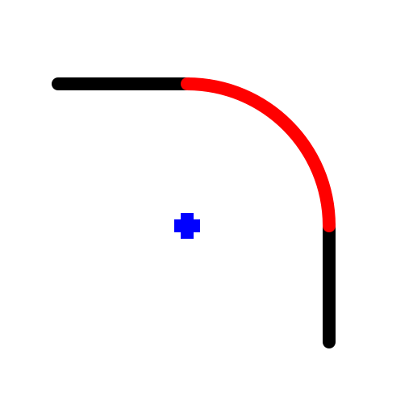

Round
Toolbar / Icon:


Menu: Modify > Round
Shortcut: R, N
Commands: round | rn
Description:
Rounds the corner of a contour. Optionally, the edge entities of the corner
can be trimmed automatically to fit the new shape.
Procedure:
- Enter the radius of the rounding in the options tool bar (e.g. 5).
- Check 'Trim' if you want to trim the entities automatically. If the
option is disabled, the two corner entities will remain untouched.
- Choose the first edge entity (a line or arc).
- Choose the second entity.
